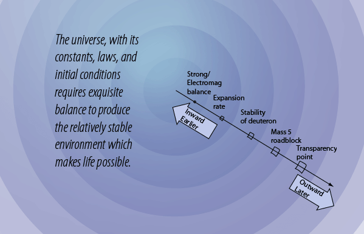

Windows of Creation
Surely humans have always asked the questions "How did this happen?" and "How did we come to be here?" While the question of how the universe was formed is as old as humanity, only recently could our investigation of nature yield enough data to build tentative models. The still young field of cosmology has led us to the "Big Bang" model and the explosive growth of the study of astrophysics. One of the many surprises along the journey has been the discovery that many parameters must be carefully balanced and initial conditions had to be precisely tuned to produce the present universe and life on the Earth.
The story of the apparent "fine tuning" of the universe to make life possible has been discussed in terms of a variety of "anthropic principles" and from many philosophic and faith based perspectives. This is a beginning attempt to discuss the fascinating examples of the balances and conditions essential to the forming of the present universe. The title chosen is "Windows of Creation" to emphasize the nature of the conditions that had to be simultaneously met to get us to our present circumstance.
The graphical guide is designed for clicking on any of the text. One must approach such an exploration as this with a great deal of humility. Suggestions and comments are welcomed.
| Cosmology |
HyperPhysics  | R Nave |